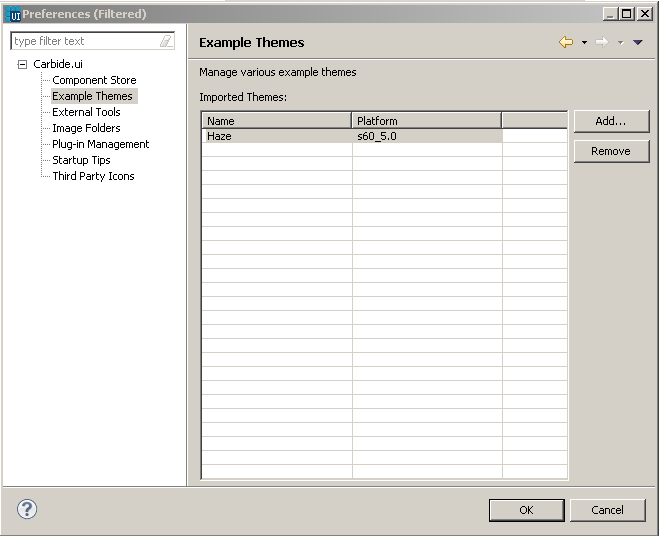

Example Themes
You can manage example themes in the tool using the
Example Themes preference page. You can add new example themes or remove old ones that are not needed anymore.
Example Themes can be added in .zip format.
You can download the example themes from Forum Nokia or you can export your themes
in .zip format and add them back to the tool as an example theme.
To create your own example themes
- Create your theme for the required platform.
- Export your theme in the .zip file format.
To add example themes
- In the menu bar, select Window
-> Preferences.
- In the tree view on the
left, select Carbide.ui ->
Example Themes.
- Click on the Add button and browse for the example theme downloaded or the .zip file exported.

Figure:
Example Themes